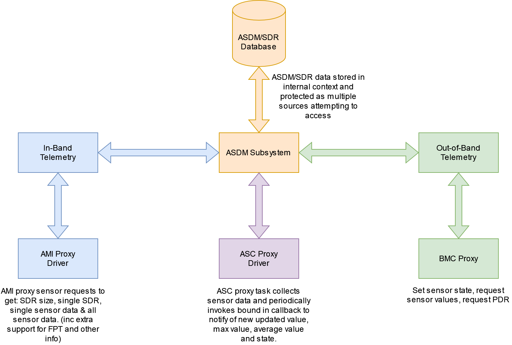

AMR ASDM Application¶
Overview¶
The Alveo Sensor Data Model (ASDM) is a data reporting format designed for storing and processing in-band and out-of-band sensor communication within Alveo devices, specifically targeting Versal Discovery boards. ASDM enables the monitoring and management of Alveo cards in data center environments by collecting and processing data from various sensors, such as temperature, power rails, voltages, and currents. This sensor data is used by server applications to control and manage Alveo cards via in-band or out-of-band communication methods, with out-of-band communication using server management protocols such as DMTF (PLDM/MTCP). In the ASDM format, sensor data is stored in the form of Sensor Descriptor Repository (SDR).
An SDR is a structured data model intended to store, organize, and represent sensor information in a scalable and adaptable manner. The SDR consists of three main components: Header, Sensor Record, and EoR (End of Record). The Header includes metadata about the repository, such as the repository type, version number, total number of records, and the total number of bytes. Sensor Records contain specific details about individual sensors, including sensor ID, name, value, unit, modifier, threshold support, threshold limits, and sensor status. The EoR marks the end of the repository, allowing applications to recognize the completion of the data.
The ASDM application stores this data internally, and makes it available through the in-band application.

Public APIs¶
iASDM_Initialise Function¶
This function dynamically creates and populates the pxAsdmSdrInfo which is stored within the global context.
The ASDM (Alveo Sensor Data Model) consists of:
Header
Number of SDR’s
End of Record
The initialize function takes in 1 parameter ( ucNumSensors ) which is uses to populate the internal ASDM structures.
iASDM_Initialise
/**
* @brief Initialise the ASDM application layer
*
* @param ucNumSensors Number of sensors in the profile
*
* @return OK Successfully initilaised the layer
* ERROR Failed to initialise
*/
int iASDM_Initialise( uint8_t ucNumSensors );
Print internal ASDM data¶
API function to print out the internal ASDM repo data.
iASDM_PrintAsdmRepoData
/**
* @brief Print out the internal ASDM repo data
*
* @param iRepoIndex The repo index
*
* @return OK Stats retrieved from proxy driver successfully
* ERROR Stats not retrieved successfully
*
*/
int iASDM_PrintAsdmRepoData( int iRepoIndex );
Print Statistics¶
Debug function used to display the statistic counters and errors.
iASDM_PrintStatistics
/**
* @brief Print all the stats gathered by the application
*
* @return OK Stats retrieved from the application successfully
* ERROR Stats not retrieved successfully
*
*/
int iASDM_PrintStatistics( void );
Clear Statistics¶
Debug function used to clear the all statistics counters back to zero.
iASDM_ClearStatistics
/**
* @brief Clear all the stats in the application
*
* @return OK Stats cleared successfully
* ERROR Stats not cleared successfully
*
*/
int iASDM_ClearStatistics( void );
Populate Response¶
API function to return the buffer populated with the associated response.
iASDM_PopulateResponse
/**
* @brief Returns the buffer populated with associated response
*
* @param xApiType The associated API type
* @param xAsdmRepo The repo type
* @param ucSensorId The sensor ID, if applicable
* @param pucRespBuff The buffer to be populated with the response
* @param pusRespSizeBytes Max buffer size passed in, number of bytes populated returned
*
* @return OK Successfully populated the response
* ERROR Failed to populate the response
*/
int iASDM_PopulateResponse( ASDM_API_ID_TYPE xApiType,
ASDM_REPOSITORY_TYPE xAsdmRepo,
uint8_t ucSensorId,
uint8_t *pucRespBuff,
uint16_t *pusRespSizeBytes );
Internal Design¶
The ASDM subsystem will be accessed from three possible different threads. It will provide access to:
Handle the sensor data updates data from the ASC.
Handle the API data requests coming from the AMI proxy (including sensor data, FPTs, and Manufacturing information).
Handle the API requests coming from the BMC proxy.
Enums¶
The list of repo types supported within the in band application.
ASDM_API_ID_TYPE
/**
* @enum ASDM_API_ID_TYPE
* @brief is a unique number that represents API ID type
*/
typedef enum ASDM_API_ID_TYPE
{
ASDM_API_ID_TYPE_GET_SDR_SIZE = 1,
ASDM_API_ID_TYPE_GET_SDR = 2,
ASDM_API_ID_TYPE_GET_SINGLE_SENSOR_DATA = 3,
ASDM_API_ID_TYPE_GET_ALL_SENSOR_DATA = 4,
ASDM_API_ID_TYPE_GET_SDR_V2 = 5,
ASDM_API_ID_TYPE_GET_ALL_SENSOR_DATA_V2 = 6,
ASDM_API_ID_TYPE_CONFIG_WRITES = 7, /* Not sensor related, should be rejected by ASDM */
ASDM_API_ID_TYPE_SEND_EVENTS = 8, /* Not sensor related, should be rejected by ASDM */
ASDM_API_ID_TYPE_MAX
} ASDM_API_ID_TYPE;
Accepted repository type IDs.
ASDM_REPOSITORY_TYPE
/**
* @enum ASDM_REPOSITORY_TYPE
* @brief is a unique number that represents each repo type
*/
typedef enum ASDM_REPOSITORY_TYPE
{
ASDM_REPOSITORY_TYPE_BOARD_INFO = 0xC0,
ASDM_REPOSITORY_TYPE_TEMP = 0xC1,
ASDM_REPOSITORY_TYPE_VOLTAGE = 0xC2,
ASDM_REPOSITORY_TYPE_CURRENT = 0xC3,
ASDM_REPOSITORY_TYPE_POWER = 0xC4,
ASDM_REPOSITORY_TYPE_TOTAL_POWER = 0xC6,
ASDM_REPOSITORY_TYPE_FPT = 0xF0,
ASDM_REPOSITORY_TYPE_MAX
} ASDM_REPOSITORY_TYPE;
Request completion code IDs.
ASDM_SDR_COMPLETION_CODE
/**
* @enum ASDM_SDR_COMPLETION_CODE
* @brief the request completion code
*/
typedef enum ASDM_SDR_COMPLETION_CODE
{
ASDM_SDR_COMPLETION_CODE_NOT_AVAILABLE = 0x00,
ASDM_SDR_COMPLETION_CODE_OPERATION_SUCCESS,
ASDM_SDR_COMPLETION_CODE_OPERATION_FAILED,
ASDM_SDR_COMPLETION_CODE_MAX
} ASDM_SDR_COMPLETION_CODE;
Repository type ID.
AMC_ASDM_SUPPORTED_REPO
/**
* @enum AMC_ASDM_SUPPORTED_REPO
* @brief the repo type
*/
typedef enum AMC_ASDM_SUPPORTED_REPO
{
AMC_ASDM_SUPPORTED_REPO_TEMP = 0,
AMC_ASDM_SUPPORTED_REPO_VOLTAGE,
AMC_ASDM_SUPPORTED_REPO_CURRENT,
AMC_ASDM_SUPPORTED_REPO_POWER,
AMC_ASDM_SUPPORTED_REPO_TOTAL_POWER,
AMC_ASDM_SUPPORTED_REPO_FPT,
AMC_ASDM_SUPPORTED_REPO_BOARD_INFO,
AMC_ASDM_SUPPORTED_REPO_MAX
} AMC_ASDM_SUPPORTED_REPO;
Structures¶
Common header used for sensor SDR messages, contains information about the sensor repository being sent across to AMI.
The Header is 5 bytes long and is formatted as follows:
Repository Type
Repository Version Number
Total Number of Records
Total Number of Bytes (in multiples of 8)
ASDMSensorHeader
/**
* @struct ASDMSensorHeader
* @brief the SDR/SDS header format
*
* @note Packed to 5 bytes to maintain layout for parsing in AMI
*/
typedef struct __attribute__( ( __packed__ ) ) ASDMSensorHeader
{
uint8_t ucRepoType; /* is a unique number that represents the SDR */
uint8_t ucRepoVersionNum; /* is used to differentiate multiple versions of SDRs */
uint8_t ucTotalNumRecords; /* total number of sensor records within each SDR type */
uint16_t usTotalNumBytes; /* is represented in multiple of 8s long will be represented as 10 */
} ASDMSensorHeader;
Individual sensor record, contains sensor information as defines in the ASDM spec.
ASDM_SDR_RECORD
/**
* @struct ASDM_SDR_RECORD
* @brief a single SDR sensor record
*/
typedef struct ASDM_SDR_RECORD
{
uint8_t ucId; /* uniquely identifies each sensor record within the SDR */
ASDM_RECORD_FIELD xSensorName;
ASDM_RECORD_FIELD xSensorValue;
ASDM_RECORD_FIELD xSensorBaseUnit;
char cUnitModifier;
uint8_t ucThresholdSupportedBitMask;
uint32_t ulLowerFatalLimit;
uint32_t ulLowerCritLimit;
uint32_t ulLowerWarnLimit;
uint32_t ulUpperWarnLimit;
uint32_t ulUpperCritLimit;
uint32_t ulUpperFatalLimit;
uint8_t ucSensorStatus;
uint32_t ulMaxValue;
uint32_t ulAverageValue;
} ASDM_SDR_RECORD;
Individual board info record. Holds board information from the EEPROM.
ASDM_BOARD_INFO_RECORD
/**
* @struct ASDM_BOARD_INFO_RECORD
* @brief the board info record
*/
typedef struct ASDM_BOARD_INFO_RECORD
{
ASDM_RECORD_FIELD xEepromVersion; /* ASCII */
ASDM_RECORD_FIELD xProductName; /* ASCII */
ASDM_RECORD_FIELD xBoardRev; /* ASCII */
ASDM_RECORD_FIELD xBoardSerial; /* ASCII */
ASDM_RECORD_FIELD xMacAddressCount; /* Literal/Binary */
ASDM_RECORD_FIELD xFirstMacAddress; /* Literal/Binary */
ASDM_RECORD_FIELD xActiveState; /* ASCII */
ASDM_RECORD_FIELD xConfigMode; /* Literal/Binary */
ASDM_RECORD_FIELD xManufacturingDate; /* Literal/Binary */
ASDM_RECORD_FIELD xPartNumber; /* ASCII */
ASDM_RECORD_FIELD xUuid; /* Literal/Binary */
ASDM_RECORD_FIELD xPcieId; /* Literal/Binary */
ASDM_RECORD_FIELD xMaxPowerMode; /* Literal/Binary */
ASDM_RECORD_FIELD xMemorySize; /* ASCII */
ASDM_RECORD_FIELD xOemId; /* Literal/Binary */
ASDM_RECORD_FIELD xCapability; /* Literal/Binary */
ASDM_RECORD_FIELD xMfgPartNumber; /* ASCII */
} ASDM_BOARD_INFO_RECORD;
Individual FPT record.
ASDM_FPT_RECORD
/**
* @struct ASDM_FPT_RECORD
* @brief the fpt header and records
*/
typedef struct ASDM_FPT_RECORD
{
ASDM_FPT_HEADER xFptHdrPrimary;
ASDM_FPT_ENTRY *pxFptEntryPrimary;
ASDM_FPT_HEADER xFptHdrSecondary;
ASDM_FPT_ENTRY *pxFptEntrySecondary;
} ASDM_FPT_RECORD;
Complete SDR structure, contains the header, record (sensor, board info, fpt), and an EOR (end of record) byte sequence.
ASDM_SDR
/**
* @struct ASDM_SDR
* @brief represents a single SDR instance
*/
typedef struct ASDM_SDR
{
ASDM_SENSOR_HEADER xHdr;
union
{
ASDM_SDR_RECORD *pxSensorRecord;
ASDM_FPT_RECORD xFptRecord;
ASDM_BOARD_INFO_RECORD *pxBoardInfo;
};
uint8_t pucAsdmEor[ ASDM_EOR_BYTES ];
} ASDM_SDR;
Used to internally store a list of sensors id’s per repo type and associated index into the pxAscData.
ASDM_SENSOR_LIST
/**
* @struct ASDM_SENSOR_LIST
* @brief List of sensors IDs stored per repo type
*/
typedef struct ASDM_SENSOR_LIST
{
uint8_t ucNumFound;
uint8_t *pucSensorIndex;
uint8_t *pucSensorId;
} ASDM_SENSOR_LIST;
iAscCallback Function¶
This function is bound into the callback from the ASC Proxy to listen for the ‘ASC_PROXY_DRIVER_E_SENSOR_UPDATE_COMPLETE’ event.
Once received it calls back into the ASC to get the latest sensor values and uses this to update the internal ASDM calling iUpdateAsdmValues( ).
iUpdateAsdmValues Function¶
The function is called from within the ASC callback whenever a sensor update complete event is received.
Within mutex protection it loops around the internal sensor list and updates the sensor value to the latest based on the data received from the ASC proxy.
iUpdateAsdmValues
/**
* @brief Update the global ASDM table sensor values
*
* @return OK or ERROR
*
*/
static int iUpdateAsdmValues( void );